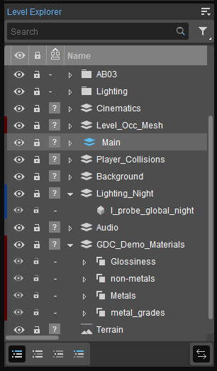
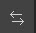
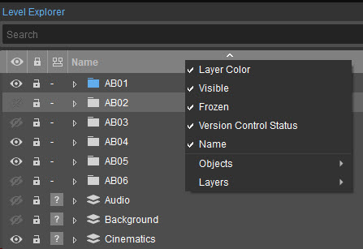
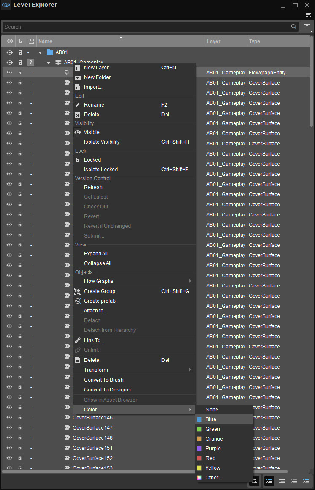
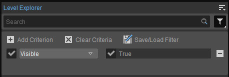
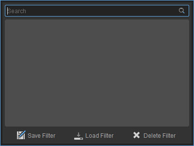
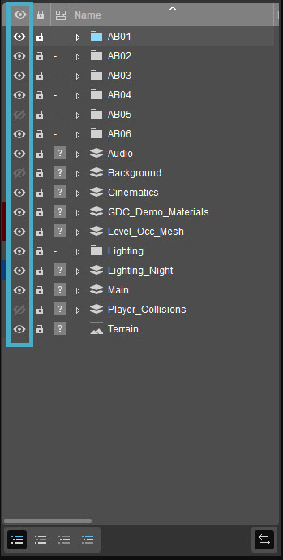
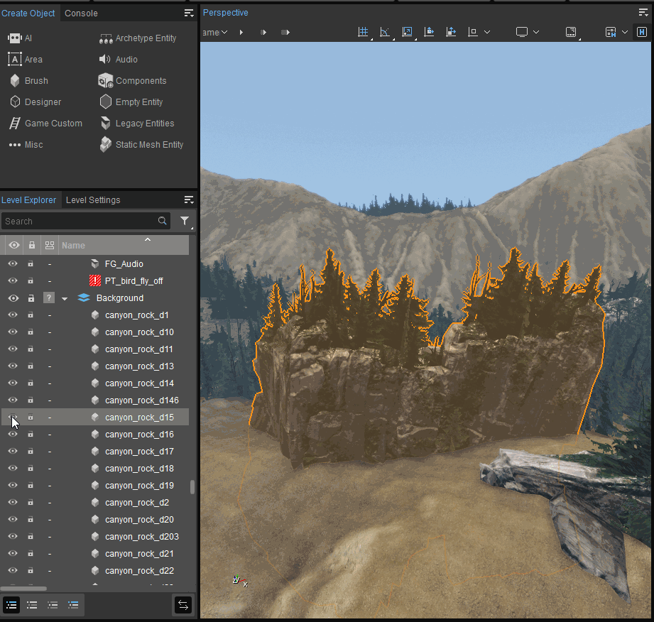
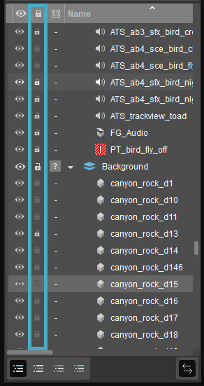
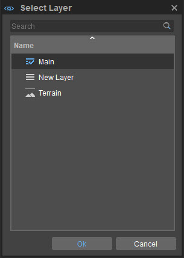

Overview
The Level Explorer lists every object that has been added to a level, allowing users to browse through them without affecting their states. It also allows users to hide, freeze and search for objects within the Viewport.

Level Explorer Overview
Objects may further be grouped into layers, which may in turn be locked, hidden or grouped into folders.
This is particularly useful in instances where multiple objects need to be locked/hidden all at once, where different layers of objects need to be displayed at differing points of time within a game, or simply to prevent members of your development team from working on the same level objects simultaneously.
As an example, a cinematic demonstrating the destruction of a village could be designed to use different layers of assets before and after the event of destruction. By default the Level Explorer is displayed in the bottom-left panel of the Sandbox interface, but it can also be accessed via Tools → Level Editor → Level Explorer.
Menu
The Level Explorer's Main Menu can be found under the 
File
Option | Description |
|---|---|
New Layer | Creates a new layer in the Level Explorer. |
New Folder | Creates a new folder in the Level Explorer. |
Import... | Brings up the system's File Explorer to locate a previously exported layer; layer files must carry a .lyr extension and may be imported into multiple levels as required. |
Edit
Option | Description | ||||||||||
|---|---|---|---|---|---|---|---|---|---|---|---|
Delete | Deletes the selected object(s)/layer(s)/folder(s). | ||||||||||
Find | Allows users to search for objects within a level by using the Search Bar in the Level Explorer. | ||||||||||
| Visible | Toggles the visibility of the object(s)/layer(s)/folder(s) currently selected in the Level Explorer. | ||||||||||
| Isolate Visibility | Toggles the visibility of all object(s)/layer(s)/folder(s) in the Viewport, except the object/layer/folder currently selected in the Level Explorer. | ||||||||||
| More |
| ||||||||||
| Locked | Locks the current object/folder/layer, preventing it from being edited. A locked object/folder/layer is indicated by the Learn more about locking and unlocking in the Locking Layers/Folders/Objects section below. | ||||||||||
| Isolate Locked | Toggles the lock on all object(s)/layer(s)/folder(s), except the object/layer/folder currently selected in the Level Explorer. | ||||||||||
| More |
| ||||||||||
| Open in File Explorer | Opens the file explorer and locates the selected layer's .lyr file in the project's directory of assets. | ||||||||||
| Copy Name | Copies the name of the selected layer/folder to the clipboard, so that it can pasted into another application. | ||||||||||
| Copy Path | Copies the file path of the selected layer/folder to the clipboard, so that it can be pasted into another application. |
View
Option | Description |
|---|---|
Show Full Hierarchy | Lists all existing layers and folders in the Level Explorer; these layers/folders can also be expanded to reveal the objects they contain. The Show Full Hierarchy option can also be toggled by clicking the |
Show Layers | Lists all created layers and folders without displaying the objects they contain. Alternatively toggled by clicking the |
Show All Objects | Lists all existing objects within the Level Explorer, without displaying the layers/folders these objects belong to. Also toggled by clicking the |
Show Active Layer Contents | Lists the contents of the Active Layer in the Level Explorer. An Active Layer is the primary layer within which all inserted objects are placed by default; any layer might be set as the Active layer by double-clicking it. Show Active Layer Contents can also be toggled by clicking the |
Expand All | Lists the entire hierarchy of created folders, layers and the objects they contain. |
Collapse All | Collapses the hierarchy of created folders, layers and the objects they contain, so that only the top-most levels within this hierarchy are displayed. |
Sync Selection | When enabled, the Viewport camera will focus on an object when that object is selected in the Level Explorer, and vice versa. Sync Selection may also be enabled/disabled by clicking the  |
Apply Filter | Previously created filters are listed under this sub-menu. When a filter is selected, only those objects/layers/folders that meet the search criteria defined by the filter are displayed in the Level Explorer. Applied filters can be cleared either by clicking the selected filter again, or by clicking the Clear Criteria option from the Apply Filter sub-menu. Refer to the Filter section on this page for more information on creating and using filters. |
| Adaptive Layout | When Adaptive Layout is enabled, the positions of the toolbars change with respect to the size of the Level Explorer window. |
Focus on Active Layer
Highlights the Active Layer in the Level Explorer.
An Active Layer is the primary layer within which all inserted objects are placed by default; any layer might be set as the Active layer by double-clicking it, or by right-clicking it and selecting the Set as Active Layer option from the context menu.
Toolbars
| Option | Description | ||||||||||||||
|---|---|---|---|---|---|---|---|---|---|---|---|---|---|---|---|
| Customize | Opens the toolbar customization window allowing users to customize existing toolbars, and/or create new toolbars. | ||||||||||||||
| Lock Toolbars | When disabled, the positions of toolbars and spacers can be changed by drag and drop. | ||||||||||||||
| Spacers | The following options allow users to use spacers in positioning their toolbars.
The Spacers menu options are only available when Toolbars → Lock Toolbars is disabled. | ||||||||||||||
| Toolbars | Lists all default and custom toolbars created for the Level Explorer, allowing users to select which toolbar they'd like to hide or display. By default, the following two toolbars are available in the Level Explorer:
|
When a tool has a toolbar, whether this is a default one or a custom one, the options above are also available when right-clicking in the toolbar area (only when a toolbar is already displayed).
Help
Opens the user documentation for this tool in the web browser.
Layer
| Option | Description | ||||||||||||||||||
|---|---|---|---|---|---|---|---|---|---|---|---|---|---|---|---|---|---|---|---|
| Set as Active Layer | When a layer is selected in the Level Explorer, this option sets that layer as the Active Layer. By default, all inserted objects are placed in the Active Layer. | ||||||||||||||||||
| Lock Read-Only Layers | Locks all layers that have been set to Read-Only mode on disk. This is particularly useful when using version control, allowing only those layers that have been marked for editing to be modified. | ||||||||||||||||||
| More |
|
The List View
Clicking on the titles of any of the columns within the Level Explorer's list of objects, layers and folders, automatically sorts the contents of that column in ascending/descending alphabetical order. You may further choose to display/hide specific columns via the context menu generated by right-clicking a column title.

Right-clicking a column title
This context menu contains the following as its primary items.
Column | Description | ||||||||||||||||||||||||||||||
|---|---|---|---|---|---|---|---|---|---|---|---|---|---|---|---|---|---|---|---|---|---|---|---|---|---|---|---|---|---|---|---|
Layer Color | Displays colors assigned to objects, layers and folders within the Level Explorer's list. Colors may be assigned to an item within the Level Explorer by right-clicking it, and selecting the Color option from the context menu. Both preset and custom colors may be assigned.  | ||||||||||||||||||||||||||||||
Visible | When enabled, visible/invisible objects, layers and folders are indicated by the | ||||||||||||||||||||||||||||||
Frozen | Locked/unlocked objects, layers and folders are indicated by the | ||||||||||||||||||||||||||||||
Name | The names of all objects, layers and folders are displayed in the Level Explorer, when this option is enabled. | ||||||||||||||||||||||||||||||
Objects | This menu option is not available when Show Layers is active. Lists additional columns that can be added to the Level Explorer, to display information relevant to the objects included within a level. The following columns are available:
| ||||||||||||||||||||||||||||||
Layers | This menu option is not available when Show All Objects or Show Active Layer Contents is enabled. Lists additional columns that can be added to the Level Explorer to display information relevant to the layers in a level. These columns are:
|
- The Level Explorer is set to Show Full Hierarchy by default.
- Pressing Ctrl+F when working within the Level Explorer takes you to the Search Bar at its top, allowing you to quickly search for object/layer/folder. When working within another panel/tool that doesn't have a search bar however, Ctrl+F opens a new Level Explorer window with a Search Bar. This window can also be configured in the same way as the default Level Explorer.
Search Bar
Located at the top of the Level Explorer, the Search Bar enables filtering between listed objects on the basis of their names.
For instance, consider a level containing objects named village_hut, anvil, villager and man_evil_01; searching for the term vil via the Search Bar will cause the Level Explorer to list only these objects.
Filter
The Filter button meanwhile allows users to describe specific criteria by which the Level Explorer must list objects.
This criteria is based on the values of various object and layer properties, which can be displayed in columns using the context menu described in The List View section above. Clicking the Filter button adjacent to the Search Bar reveals options to Add/Clear Criteria and Save/Load custom filters.
Clicking the Add Criterion button presents a drop down menu from which object properties may be picked to specify search criteria; the field adjacent to this drop-down helps specify the property value by which the Level Explorer must filter the list of objects.

Add, Clear, Save/Load Criteria
Depending on the selected object property, these values may be as simple True/False that can be toggled via the check box situated to the left of the value, or as in the case of object properties like Object Type or Custom Material, may need to be selected from a separate drop-down or entered manually.
Clicking the

Save/Load Filter
Right-clicking the filter button makes it possible to quickly choose a saved filter instead of having to use the Save/Load Filter dialog.
Object and Layer Context Menus
Right-clicking an object or layer in the Level Explorer opens a menu with the following options.
| Option | Description | ||||||||||||||||||||||||||||||||||||||||||||||||||
|---|---|---|---|---|---|---|---|---|---|---|---|---|---|---|---|---|---|---|---|---|---|---|---|---|---|---|---|---|---|---|---|---|---|---|---|---|---|---|---|---|---|---|---|---|---|---|---|---|---|---|---|
| New Layer | Creates a new layer in the Level Explorer. | ||||||||||||||||||||||||||||||||||||||||||||||||||
| New Folder | Creates a new folder in the Level Explorer. | ||||||||||||||||||||||||||||||||||||||||||||||||||
Import... | Brings up the system's File Explorer to locate a previously exported layer; layer files must carry a .lyr extension and may be imported into multiple levels as required. | ||||||||||||||||||||||||||||||||||||||||||||||||||
| Edit |
| ||||||||||||||||||||||||||||||||||||||||||||||||||
| Layer |
| ||||||||||||||||||||||||||||||||||||||||||||||||||
| Visibility |
| ||||||||||||||||||||||||||||||||||||||||||||||||||
| Lock |
| ||||||||||||||||||||||||||||||||||||||||||||||||||
| Path Utils |
| ||||||||||||||||||||||||||||||||||||||||||||||||||
| Version Control |
| ||||||||||||||||||||||||||||||||||||||||||||||||||
| View |
| ||||||||||||||||||||||||||||||||||||||||||||||||||
| Objects |
|
Levels and their comprising layer files are written to disk within the Assets → Levels directory of a project.
Hiding Objects, Layers and Folders
The visibility of objects, layers and folders within a level is indicated by the

Visibility column
The

Toggling visibility
- Toggling the visibility of a layer or folder will toggle the visibility of all objects within that layer or folder.
- Holding CTRL while clicking upon the
icon of an object, layer, or folder in the Level Explorer, hides all items from the level except the currently selected one. Doing the same again reverses this effect. - Holding ALT while clicking upon the
or icon of a layer or folder will also make visible all the layers and objects they contain.
Locking Objects, Layers and Folders
When an object is 'locked', it cannot be edited. The

Lock column
A locked object is indicated by the
- Locking/unlocking a layer or folder will lock/unlock all objects within that layer or folder.
- Holding Ctrl while clicking upon the
icon of an object, layer or folder in the Level Explorer locks all items in the level except the currently selected one. Doing the same again reverses this effect. - Holding Alt while clicking upon the lock icon of a layer or folder unlocks all the layers and objects it contains.
Objects can still be snapped to locked objects or to objects in locked layers/folders, by holding down Ctrl + Shift while clicking on the target object. For more information on object snapping and alignment, please refer to the Snap & Alignment documentation.
Object Linking in the Level Explorer
Objects can be moved to an existing group or layer by dragging and dropping them to the destination group/layer's listing.
Dragging an object onto another object however causes both objects to be linked; if both the dragged and target objects are Entity objects such that the former has bones however, a menu is displayed to allow for linking to a specific bone of the target object. More on linking objects can be found here.

Alternatively, objects may be moved between layers by selecting them in the Level Explorer and pressing Ctrl +L; this brings up a separate Select Layer window, allowing users to search for and select the object's destination layer.

Note that for the Select Layer window to appear, at least one other layer must exist besides the Main layer.